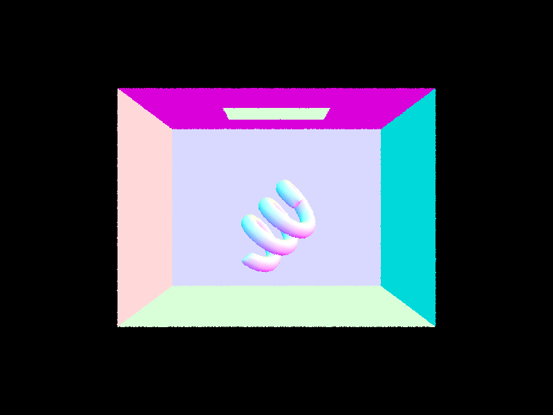
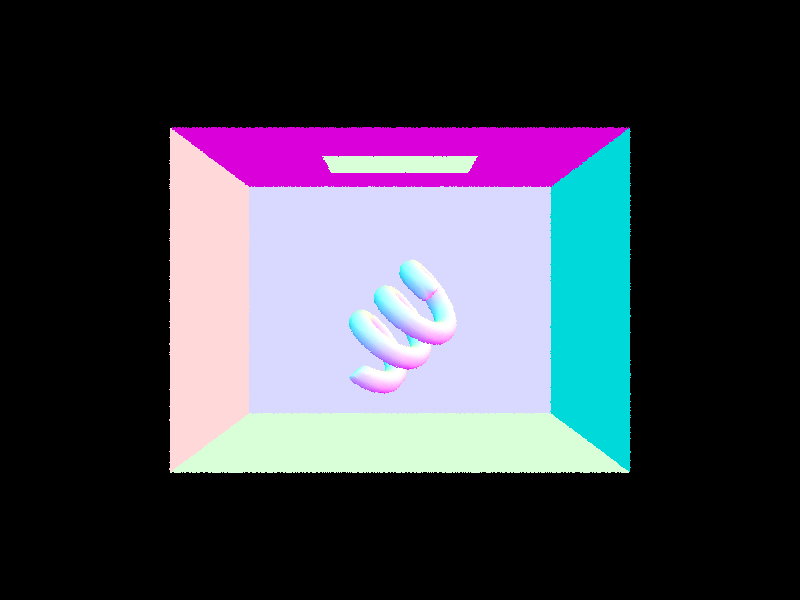
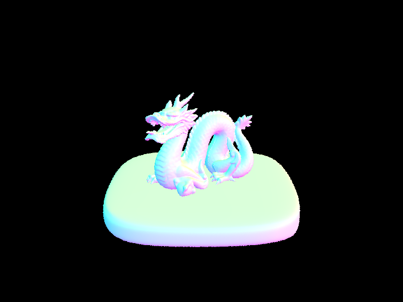
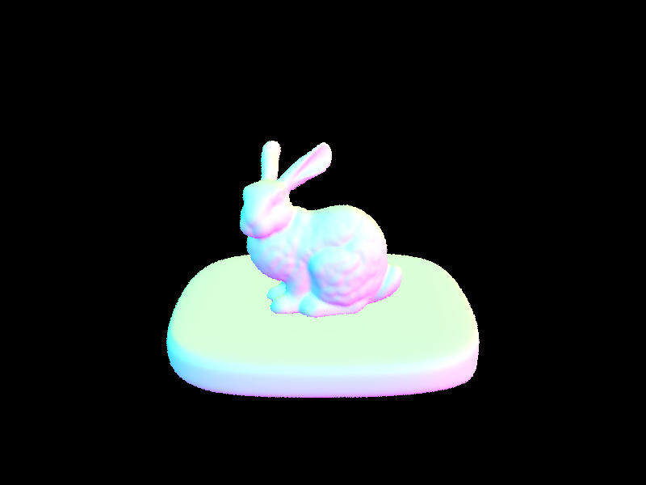
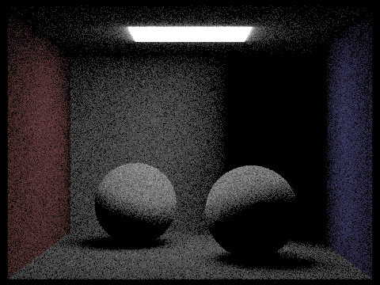
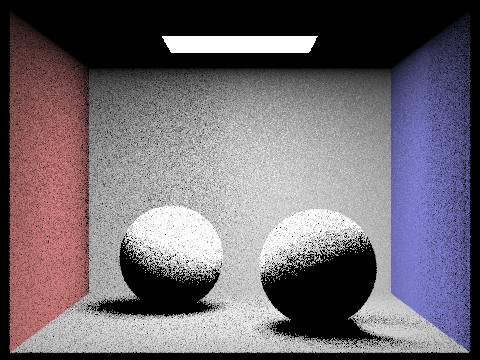
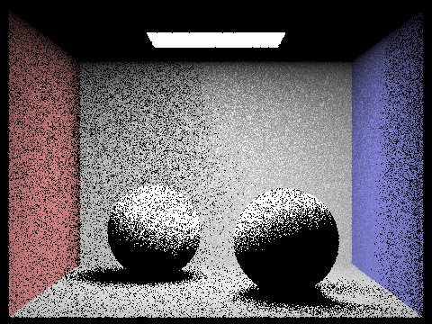
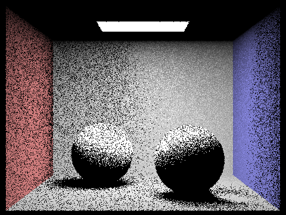
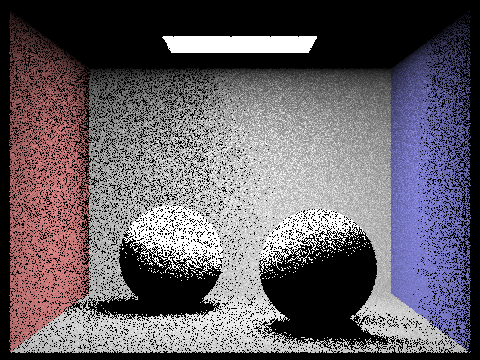

INSERT OVERVIEW HERE
In this part, we implemented the logic behind generating rays and basic pixel sampling over them, along with some basic ray intersection tests for triangles and spheres. For ray generation, given some normalized coordinates x and y, we convert them to the camera space by the following transformations. CameraX = 2 * x * tan(.5 * hFovRads) - tan(.5 * hFovRads) and CameraY = 2 * y * tan(.5 * vFovRads) - tan(.5 * vFovRads). Where the tangent function is used to scale the image space to the camera space. With this we generate the ray vector in the camera space and then convert it to the world space using the given camera to world transformation matrix, giving us our desired ray in the world space. We then implemented two intersection tests for both triangles and spheres. Triangle intersection was tested using the Moller-Trumbore algorithm, which uses barycentric coordinates and cross products to determine if a ray intersects a given triangle, while also calculating the time along the ray at which the intersection occurrs. Sphere intersection was tested as given by the lecture slides, that is by solving for the roots of a quadratic equation. The following are some images that are generated from this basic implementaion of ray generation and intersection tests.
 

Here we implement a BVH construction algorithm to speed up the rednering of meshes. Before this, every ray, even those that are very unlikeley to intersect with anything, are tested for intersection. This results in incredibly slow rendering times for anything that is moderatley complicated. We implement a recursive BVH construction algorithm that begins with the the largest bounding box of the object, and then splitting up this box into finer ones. We choose the splitting point by calculating the average centroid point of the bounding box and splitting along the x,y, or z axis. The axis is chosen by calculating which split would result in the most equal amount of primitives per side of the axis. This ensures an even amount of work is done betweent nodes in the tree as well as groups closer primitives together. Here are some images of some files that could only be rendered using our BVH construction algorithm.
 The above images rendred within a minute on my machine where they previously couldn't be rendered at all. For a more accessible benchmark, I rendered the cow.dae file using the naive implementation, and then my BVH algorithm. In the naive implementation, the cow rendered in 44 seconds and on the improved BCH implementation, in 2.5 seconds. The same test with the blob.dae file showed similar results.
Here we implemented two different methods of direct illumination. One through uniform hemisphere sampling and the otehr through importance sampling on the scene light objects themselves. In the first method, given an intersection point in our scence, we randomly cast rays from the intersection point and upon hitting a light source, calculate the lighting using the emission, angle between the rays, and bsdf function (how our object reacts to light). After a resonable number of samples, the result is averaged and our lighting calculation is done. In the second method, we instead sample the light objects themselves and cast rays directly between our intersection object and light objects, similarly allowing us to calculate the lighting our object would or wouldn't recieve. This second implementation involved some additonaly calculations to make sure that rays cast between light sources and objects behaved properly. One example is determining which side of the surface that a light ray hit an object at, if the ray is coming from behind the surface of the object, we don't need to consider this light ray and can throw it away. This was caclulated by calculating the cosine of the angle between the surface normal of the surface and the light ray, the light coming from behind the object having a negatvie cosine. We then check if the light ray hits any other object in the box, and if it does, againt throwing the ray away, as the light will instead be hitting another object in the scene instead of our input object. After this, we can calculate the lighting as we did in the previous method.
The following two images are of the same scene being rendered with our two different methods of direct light illuminination. The left using hemishpere sampling and the right being through importance sampling. Overall, we see that importance sampling produces a cleaner image and in my exoerimentation rendered faster than hemisphere sampling did. This is not surprising as in hemishpere sampling , we randomly cast rays hoping to hit a light source, while in our second method, we do not waste computation generating rays that are not going to be connected to a light source. Instead we begin with the assumption that we have a ray originating from a light source.
 The following four images are generated with our importance sampling method using 1, 4, 16, and 32 light rays respectivley. We see that shadows get slowly sharper and less noisy.
  